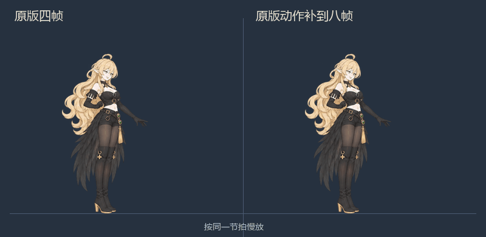
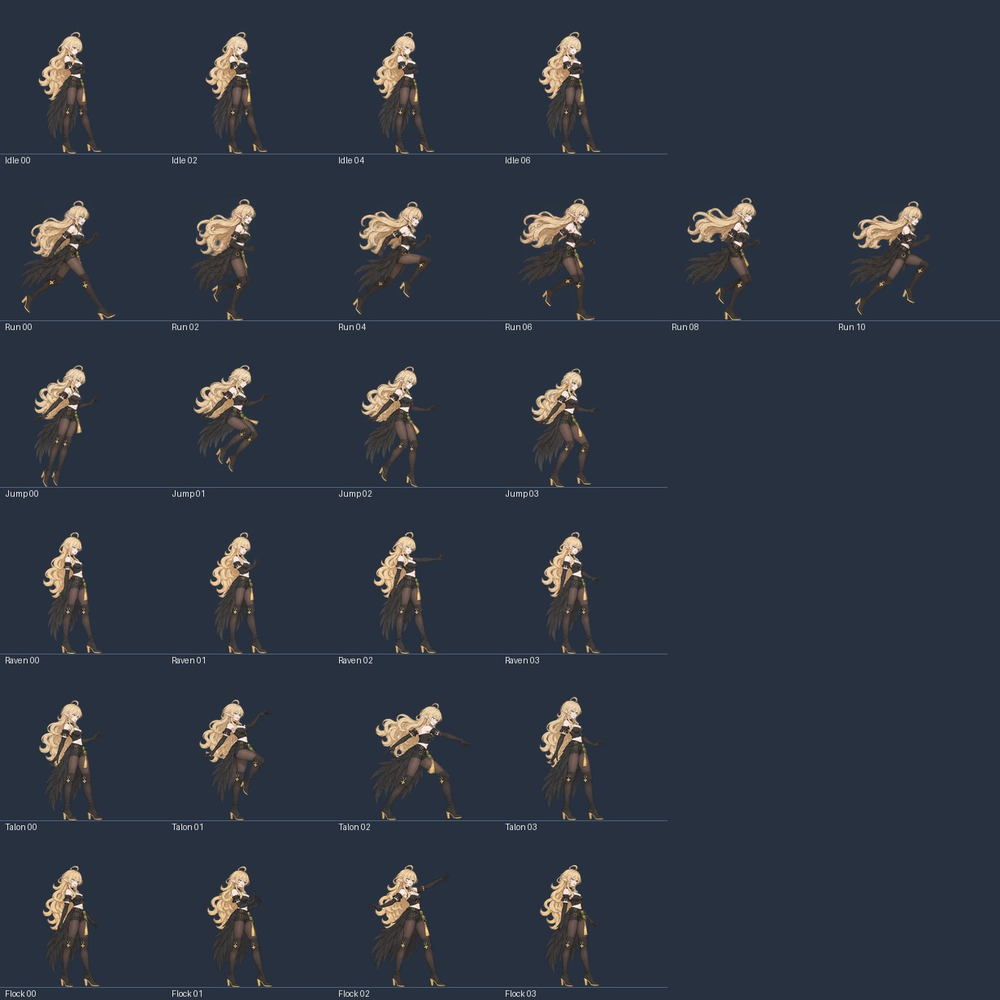
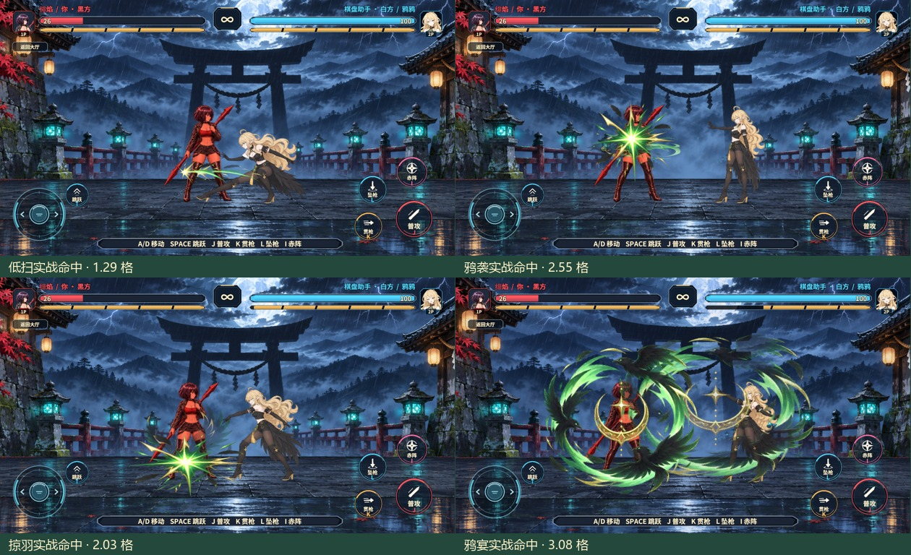
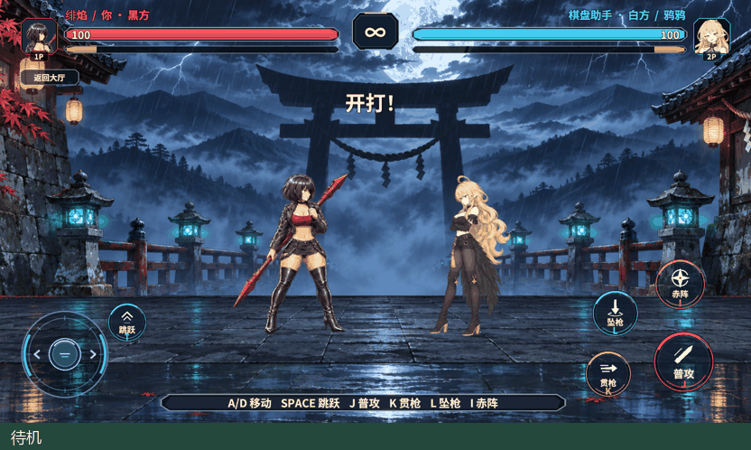

鸦鸦的动作衔接、高踢和射程
按正面、侧面和原始表情差分重新绘制 8 张待机、12 张跑步、4 张跳跃和 12 张施法图。所有站姿按普攻的头身、腰位和靴口统一，透明切片使用 400×400 画布、居中轴心和同一地面线。跳跃和跑步腾空通过腿的屈伸保留姿势差异。
原版高抬腿补帧
第三段保留原目录的四张图，插入抬腿准备、伸腿加速、踢中回收和落脚四张。两只靴子按同一侧视鞋型校准鞋底长度、金色粗跟和膝上靴口。原版高踢图 Yaya_Spin_02 仍对齐原生命中时点。

原来的四张 PNG 与上个版本逐字节相同。按 400×400 成品比例测量新增四张的金边，从鞋跟到鞋尖的左右差值约为 0.8、2.2、2.5 和 1.2 像素。查看双靴放大测量 · 查看完整播放顺序


体型、表情与落地
待机参考 28 号平静、02 号微笑和 07 号眨眼。移动及施法使用 02 号，跳跃用 23 号的专注眼神，第三段头像按实际接触切片换表情。跳跃贴图读取离地高度和升降方向，在下落经过半程后切到落地准备。

水平射程
格斗参考采用近身通常技、远距飞道具和范围大招的分工。RevGame 的数值按己方脚尖、鸦术飞行画面、绯焰站位和场宽重新定标。表格距离从起手位移结束后测量。《拳皇 XV》战斗系统 · 《罪恶装备 奋战》角色类型
| 动作 | 旧距离 | 新距离 |
|---|---|---|
| 低扫 | 1.02 格 | 1.36 格 |
| 弹踢 | 1.12 格 | 1.46 格 |
| 高抬腿 | 1.24 格 | 1.58 格 |
| 鸦袭 | 1.75 格 | 2.55 格 |
| 掠羽 | 1.52 格 | 2.05 格 |
| 鸦宴 | 2.50 格 | 3.15 格 |
白方人机可以在对应技能距离内起手。原生 FIFO 测试逐项核对双席六招的边界与越界，其中派生二三段由前一段真实命中打开取消窗口。托管端预测、回滚和连段检查通过，服务端共享规则编译通过。

Unity 对局验收
以 rev_discover 确认实际能力，rev_call game.pvp.duel-sprites 绑定切片，rev_call game.pvp.duel-atlas 核对 129 张 Sprite、3 页图集。rev_call editor.play 启动后，rev_run 经正式人机决斗 GM 进入场景，核对真实 AB 模式、已打包切片和实际命中。
跑停、起跳、落地接跑、跑动转普攻及三项施法收势都走通。跑步观测到 12 张，跳跃观测到 4 张。按同一套输入，最高点为 2.416 格，起落观测间隔为 17 个逻辑帧。落地准备从旧版记录的触地前 12 帧移到触地前 3 帧。

第三段逐张观测到 00 → 04 → 01 → 05 → 02 → 06 → 03 → 07，02 与命中特效和 23 号头像一同落屏。查看实际高踢命中

同一计划还运行了 pvp.duel-lan-hash-check。UTP 双席在第 40 帧完成周期对账，在第 83 帧终局共同得到指纹 1560284894。人机运行错误为 0，验收返回大厅并停止 Play，临时探针已移除。联机需要客户端和服务端使用同一套规则配置。